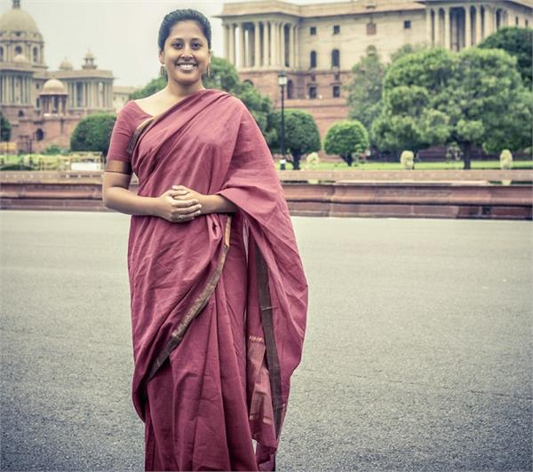

The Swaniti Idea’s
Rwitwika completed her undergraduate degree in Political Sciences and Economics from Wake Forest University and her Masters’ in Public Policy from Harvard University. Rwitwika says, “Back in 2009, as a student in graduate school, I was excited to watch the general elections. My friends and I started talking about the electoral process and how so many of us were keen to contribute to strengthening governance in India. There were too few channels of entry for young Indians to work with elected officials in supporting them with governance.”
The bureaucrats, who don’t have any direct connect with constituents, have been the ones expected to support the elected representatives. Thus, Swaniti was founded as a project in 2009. Rwitwika worked at the World Bank in the Washington DC office and UNFPA in the Delhi office before restarting Swaniti as a full-fledged non-profit organisation in 2012. Today, with a core team of 22 members, Swaniti is supported primarily by high net worth individuals and foundations. Some of their benefactors include the Tata Trust, Azim Premji Philanthropic Initiatives and Rohini Nilekani.